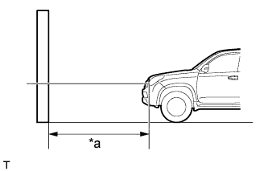
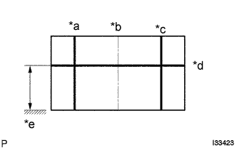
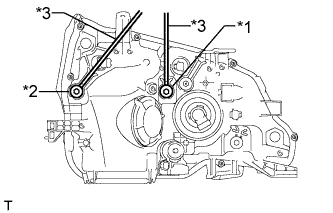
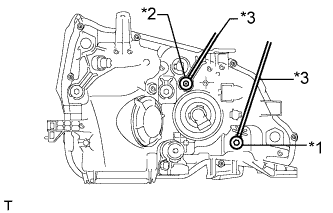

HEADLIGHT ASSEMBLY > ADJUSTMENT |
| 1. VEHICLE PREPARATION FOR HEADLIGHT AIMING ADJUSTMENT |
Prepare the vehicle:
| 2. PREPARATION FOR HEADLIGHT AIMING (Using a screen) |
|  |
Prepare the vehicle:
| *a | 25 or 3 m |
Prepare a piece of thick white paper approximately 2 m (6.56 ft.) (height) x 4 m (13.1 ft.) (width) to use as a screen.
Draw a vertical line down the center of the screen (V line).
Set the screen as shown in the illustration.
|  |
Draw base lines (H, V LH, and V RH Lines) on the screen as shown in the illustration.
| *a | V LH Line |
| *b | V Line |
| *c | V RH Line |
| *d | H Line |
| *e | Ground |
H Line (Headlight):
Draw a horizontal line across the screen so that it passes through the center marks. The H line should be at the same height as the headlight bulb center marks of the low beam headlights.
V LH Line, V RH Line (Center mark position of the left-hand (LH) and right-hand (RH) headlights):
Draw two vertical lines so that they intersect the H line at each center mark (aligned with the center of the low beam headlight bulbs).
| 3. INSPECT HEADLIGHT AIMING |
Cover the headlight or disconnect the connector of the headlight on the opposite side to prevent light from the headlight that is not being inspected from affecting the headlight aiming.
| *a | 25 or 3 m |
Start the engine.
Turn on the headlight and check if the cutoff line matches the preferred cutoff line in the following illustration.
| 4. ADJUST HEADLIGHT AIMING |
Headlight low beam.
|  |
Using a screwdriver, adjust the aim.
| *1 | Vertical Aiming |
| *2 | Horizontal Aiming |
| *3 | Screwdriver |
Headlight high beam.
|  |
Using a screwdriver, adjust the aim.
| *1 | Vertical Aiming |
| *2 | Horizontal Aiming |
| *3 | Screwdriver |